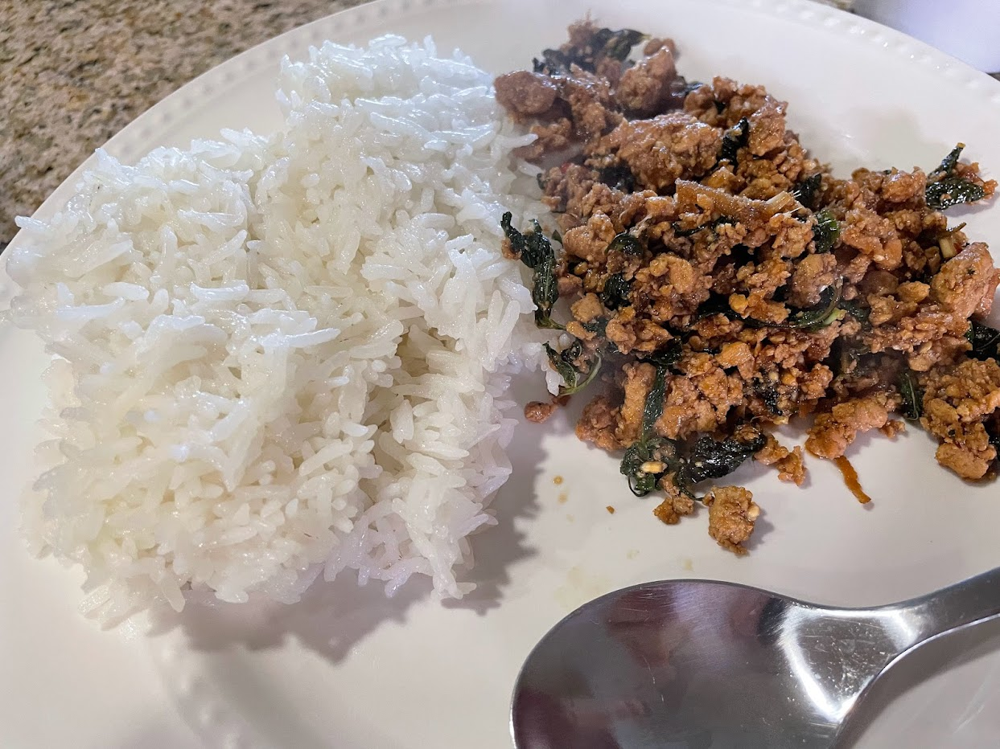

Tofu laab
Source: Priya Shah
Serving size: 2-3 servings
Tofu laab
Ingredients
- Pressed Firm tofu
- Jasmine rice
- Thai Basil
- Galangal
- White Pepper
- Thai Chilli
- Mint
Instructions
Toast rice until golden brown. Heat oil and crumble tofu into it. On the side, combine bowl of light soy sauce, lime, dark soy sauce, chopped chillis, lemongrass, mint, thai basil, galangal, white pepper, sugar to taste. Use lots of mint. Like a lot. Maybe more sugar than you'd think too. Add some water to make more sauce. Once tofu is tofued enough but not super crispy, add the sauce in and let it simmer. Set leui! (You're done in thai).
Serving suggestion
Serve with sticky rice